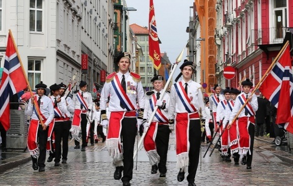
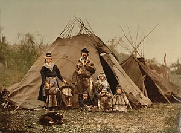
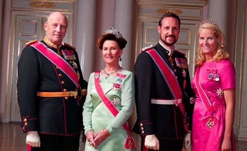
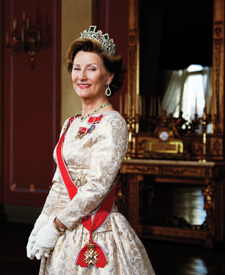

День Конституции Норвегии (17 мая) День Конституции отмечается в Норвегии 17 мая, в честь принятия Норвежской Конституции 17 мая 1814 года в городе Эйдсволль. Национальным праздником День Конституции стал благодаря поэту Б.Бьёрнсону и общественному деятелю Х.А.Вергеллану. В этот день все норвежские школьники участвуют в параде под звуки оркестра. Каждая школа несет знамя, а каждый ученик – маленький норвежский флаг. Эта традиция берет начало с 20 столетия, когда Вильям Форе основал детский оркестр, и его первое выступление состоялось 17 мая в Осло. Сейчас школьные оркестры есть в каждой школе и обязательно выступают на праздновании Дня Конституции.
День саамского народа (6 февраля) Саами – это древний скандинавский народ, проживавший на территории Скандинавского полуострова, и считающийся предками нордов. На сегодняшний день саамов насчитывается чуть более 40 тысяч человек, и они признаны национальным меньшинством страны. В настоящее время осуществляется деятельность по возрождению культуры и самобытности саамов-скольтов в Норвегии. Саамы до сих пор почитают священные камни, верят в духов и поклоняются высоким пням.
День рождения королевы Сони Харальдсен (4 июля) Королева Соня, урождённая Соня Харальдсен (норв. Sonja Haraldse) родилась 4 июля 1937 года в Осло. Она является женой короля Харольда V и королевой Норвегии с 17 января 1991 года. После обучения в гимназии, будущая королева окончила дизайнерское училище в Осло, а затем школу искусств и ремесел. После этого обучалась в Университет Осло. Соня и Харальд встречались тайно около 10 лет до свадьбы. Они сыграли свадьбу 29 августа 1968 года в Осло, и это был первый прецедент в истории норвежской монархии, когда кронпринц выбрал себе невесту "некоролевских" кровей. Но королева Соня быстро завоевала сердца своего народа, активно участвуя в международной общественной деятельности. Соня является вице-президентом норвежского Красного Креста и курирует работу реабилитационных центров для инвалидов. Этот проект получил экономическую поддержку норвежской стороны. После смерти короля Олава V 17 января 1991, Соня стала королевой Норвегии, а 23 июня 1991 года королевская чета была коронована в Тронхейме.
День прославления Святого Олафа (29 июля) Король Олаф II почитается как святой в Северной Европе, принесший христианство в Норвегию. Он является национальным героем, объединителем государства и Святым покровителем Норвегии. Святой Олаф почитаем и в России как святой благоверный Олаф Харальдсон, король Норвегии, креститель и просветитель. Он несколько лет жил в Новгороде и Старой Ладоге, где в его честь освящены храмы. Могила Олафа в соборе города Тронхейма является центром паломничества верующих всей Скандинавии. Сегодня норвежцы соблюдают все религиозные и культурные традиции времен правления короля Олафа. В этот праздник можно увидеть средневековые концерты и представления, где показывают жизнь короля Олафа. В церквях проходят праздничные службы, а в музеях открываются выставки со средневековыми экспозициями.